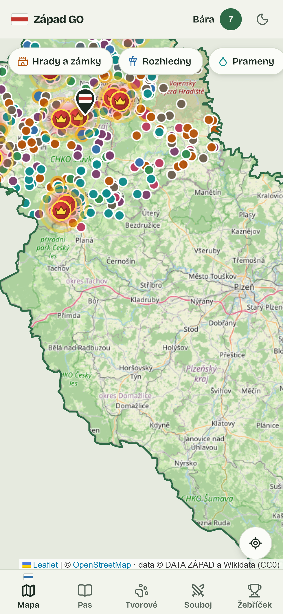
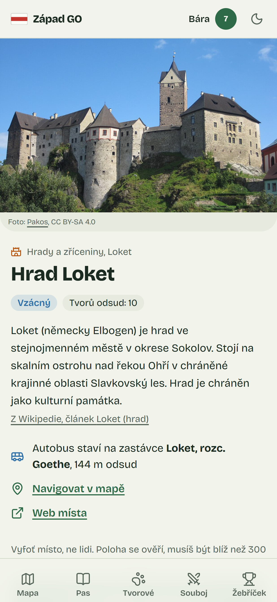
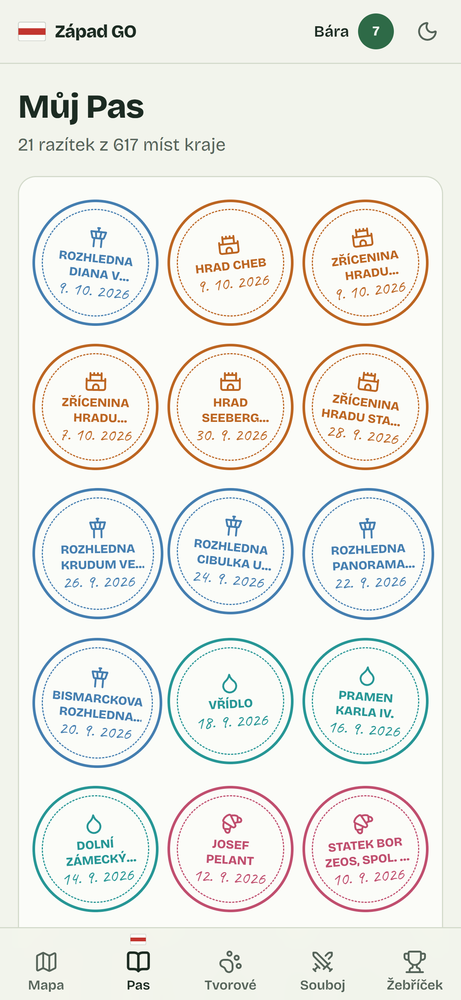
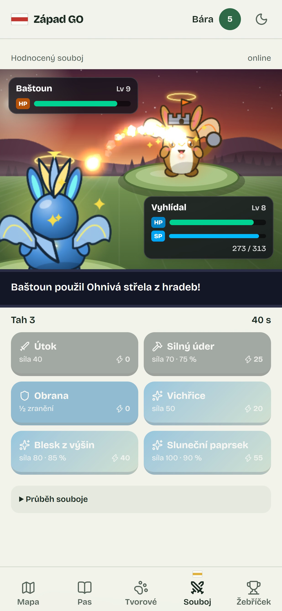
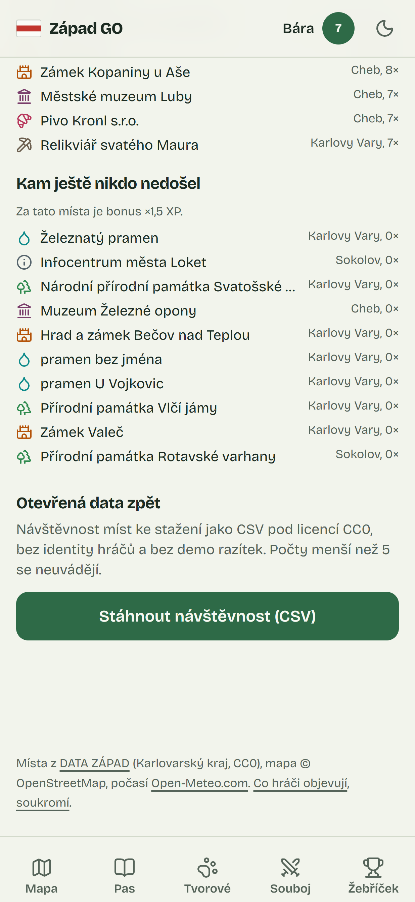

Západ GO, turistický pas Karlovarského kraje.
objekt_id,název,rozhledna,vyhlídková_věž,vyhlídka,typ_stavby,vznik,popis,provozovatel,přístup,vstupní_poplatek,webová_stránka,název_vyššího_územně_samosprávného_celku,…
1,Rozhledna Klínovec u Jáchymova,true,false,false,kamenná,1884,Na nejvyšší hoře Krušných hor Klínovci (1244 m n.m.) leží 80 m vysoká dominanta…
2,Rozhledna Blatenský vrch u Horní Blatné,true,false,false,kamenná,1913,21 metrů vysoká kamenná rozhledna byla vybudována v roce 1913 z iniciativy Spolku…
3,Rozhledna Diana v Karlových Varech,true,false,false,kamenná,1914,Mohutná cihlová rozhledna z roku 1914 o výšce 40 m doplněná krytým dřevěným ochozem.,…
míst leží mimo Karlovy Vary, Mariánské a Františkovy Lázně
míst má autobusovou zastávku do 500 metrů
oceněných výrobců Dobroty kraje má v datech adresu provozovny
617 míst na mapě, u každého nejbližší zastávka.

Blíž než 300 metrů. Polohu ověří server.

Typ podle místa. UNESCO je legendární.

V reálném čase. Typy se přebíjí.


Stejný seed, stejný boj: každý souboj jde přehrát z logu. Tahy přes WebSocket, po výpadku 20 s na návrat.
91 rizikových míst (doly, zříceniny) má varování a nedává odznaky. Veřejná je jen přezdívka, fotky zůstávají soukromé.
Django + Channels · Next.js PWA · PostgreSQL · Redis
HTTPS na vlastním serveru · 43 automatických testů
Podvrženou GPS web nepozná. Proto nevěříme jednomu signálu.
Gemini odpoví ano/ne, jestli fotka sedí k druhu místa. Jen posune skóre důvěry, samo nic nezamítne.
Dvě věty o tvorovi. Bez klíče nebo při chybě šablona. Hra funguje celá bez AI.
Pomáhali psát kód a video (Remotion). Návrh hry a výběr dat jsou naše, každou část umíme vysvětlit.
Mě nenakreslila AI, ale kód ze seedu 987654321. Stejně tak každého tvora. A souboje počítá deterministický engine, ne model.
617 míst z otevřených dat. Dojdi, vyfoť, získej razítko.
Tým KOREX · Hackathon otevřených dat Karlovarského kraje 2026 · github.com/Plokar/Open_data-hackathon
Další: